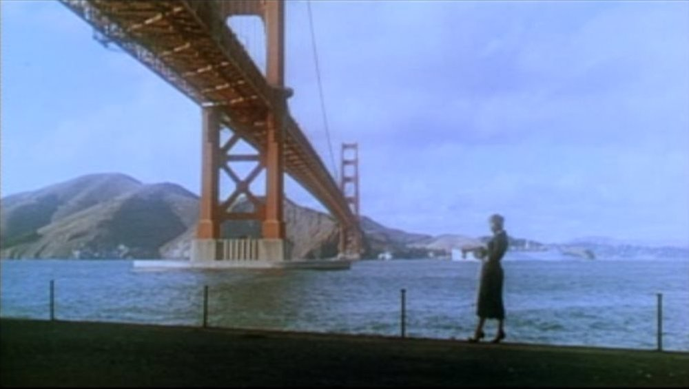

Vertigo, Trailer Still (Madeleine at Fort Point)
Alfred Hitchcock · 1958 · Film, colour (frame from the trailer)
In copyright. Look and learn: shown for study, not for download.
Madeleine jumps into the bay at Fort Point, under the Golden Gate Bridge; this frame comes from the film's trailer. Shooting began in San Francisco in September 1957 under the working title From Among the Dead and ran to December. Vera Miles was cast as Madeleine first and had modelled for an early version of the Carlotta portrait, but she became pregnant during delays, and Hitchcock replaced her with Kim Novak rather than postpone.